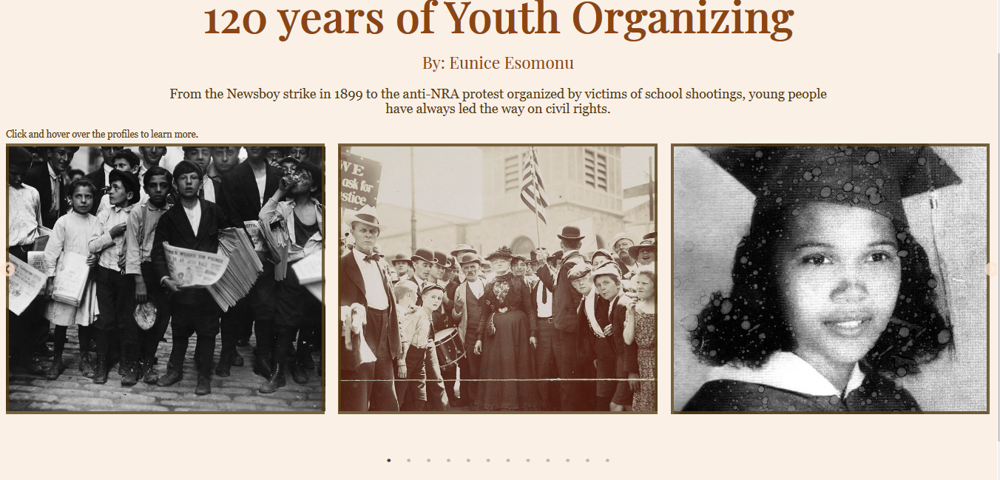

Youth Organizing
Inspired by the organizing and activism of young people against gun violence, I pitched an idea on showcasing the history of youth organizing over time. I gathered information and photographs from archival sources such as the New York Public Library and the Library of Congress. I used effective design thinking and data gathering to tell the stories of youth organizers over time.
Story: Will not run/Side project
Role: Web Designer and Developer
Tools: HTML, CSS (Stylus), Javascript (ES6)